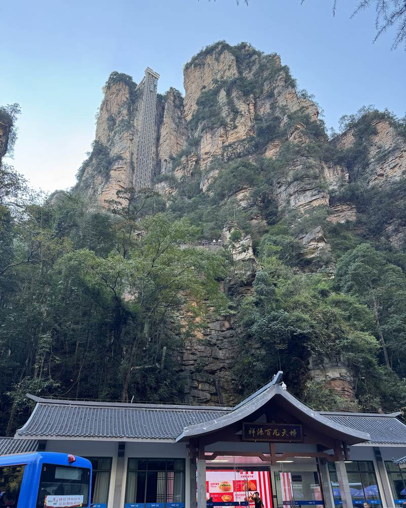

Compare what the ticket actually includes
| Product | Check admission | Check transport |
|---|---|---|
| National Forest Park | Travel date, entrance, passport details, validity and repeat-entry reservations. | Eco-buses; then elevator, cableway names, ride counts and directions. |
| Tianmen Mountain | Currently Route C, reserved date and entry window. | Cave express cableway return and upper escalators; optional facilities separately. |
| Grand Canyon | Canyon-only or bridge-inclusive; activities and entry slot. | Included exit route, boat or lift segments; optional activities. |
Build your budget from actual quotes
Use the total adult price for your selected date and product, rather than a search-result headline or a “from” price. Prices and packages can vary by date and booking channel.
- Add admission for each separate scenic area you will visit.
- Add the exact paid lifts and cableways in your route.
- Add any service charge, insurance item or optional activity shown at checkout.
- Keep hotel nights, inter-area transfers, rail or flights and meals separate.
The forest-park pass does not automatically include Tianmen Mountain or the Grand Canyon. A reseller’s multi-attraction bundle still needs clear individual inclusions.
Booking with a foreign passport
- Use the same name and passport number as your travel document.
- Confirm foreign-passport support before paying.
- Save the confirmation offline and bring the passport used for the booking.
- Ask how multi-day re-entry is reserved, rather than assuming validity guarantees any entry time.
- Check cancellation terms for your exact product; there is no universal refund rule.


Discounts need confirmation
Hunan’s published concession policy includes age and student categories with documentation requirements. Ask the operator whether your passport and student evidence qualify for the selected product, and whether transport is charged separately.
The linked policy is from 2024; it provides background, not a verified current checkout quote.
Quick answers
Is one ticket enough for everything?
No. The forest park, Tianmen Mountain and Grand Canyon are separate scenic areas.
Is the cheapest listing the adult ticket?
Not necessarily. Check whether it is a supplement, child price, activity-only ticket or admission without transport.
How do I check the final price?
Select your date, adult traveller category and required transport. Compare the final payable total and cancellation terms before confirming.
Sources & review notes
Editorial review: 13 October 2026. Operational claims below are dated, not a live status feed.